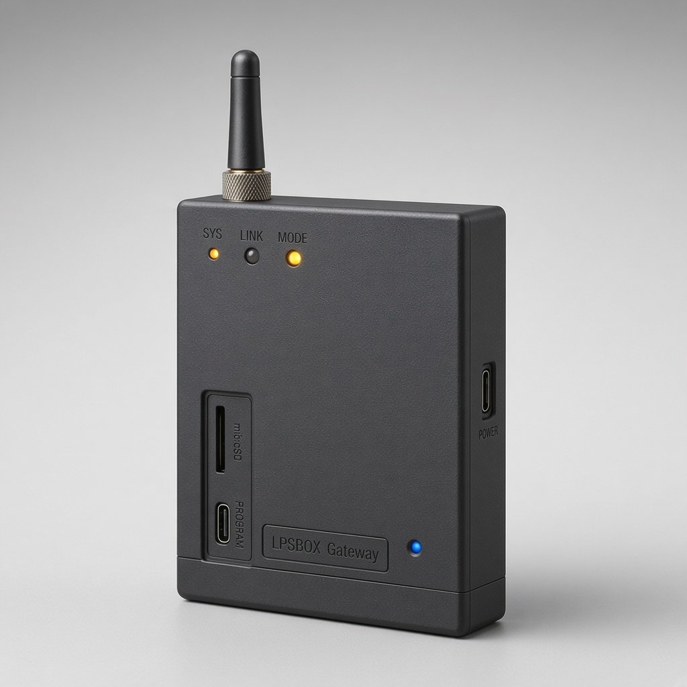
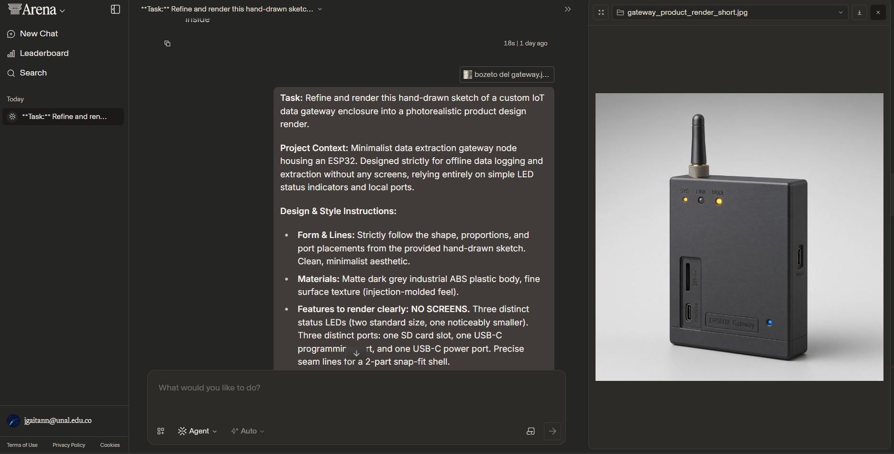

Parte 2A — Boceto Original del Gateway
Diseño conceptual sin pantalla especificando el Mini LED que titila recibiendo info, LED Amarillo (hay información), LED Azul (no hay info) y puertos de extracción/carga.
t₀).
Medio
Como el Gateway físico carece de pantalla por diseño industrial de bajo consumo y alta resistencia, el operario extrae aquí por USB-C / microSD / Red Local los paquetes enviados por el Sniffer antes del colapso de comunicaciones.
| ID / Huella | MAC Capturada | Protocolo / Tipo | RSSI Zonas (A / B / C / D) | Zona Pre-Sismo (t₀) | Señal Post-Sismo |
|---|
t₀)
🟢 Señal evacuada al exterior post-sismo
🔴 Señal perdida / persona atrapada en interior
🎯 Pin de rescate marcado por el Operario
Curva de relación STA/LTA (Short-Term / Long-Term Average) calculada sobre el acelerómetro MPU6050 y trama JSON recibida por el broker MQTT de la Raspberry Pi 5:
Con base en los datos enviados por el Sniffer al Gateway, indica cuántas personas había en el edificio y en qué zonas se ubicaban (con su celular) justo antes del sismo (t₀):
Documento integral de diseño (Game Pitch, Core Gameplay Loop, Sincronización Físico-Virtual de Hardware y Puente Python/MQTT hacia Unity, Godot y WebXR).
Este simulador en GitHub Pages puede recibir telemetría real desde tu Raspberry Pi 5 ejecutando el script incluido en el repositorio (python_rpi5_bridge/rpi5_lpsbox_bridge.py). Al conectar, el conteo real de celulares cercanos y los golpes/vibraciones del MPU6050 controlan directamente la escena 3D/MR:
Concepto Central: Durante un terremoto severo, la energía eléctrica y las redes celulares colapsan en segundos, dejando a los equipos de rescate a ciegas sobre cuántas personas había dentro de una edificación y en qué salas se encontraban. LPSBOX: Operador de Emergencia MR convierte la caja física del Gateway IoT (impresa en 3D, minimalista y sin pantalla, gobernada por una Raspberry Pi 5 y un nodo ESP32 + MPU6050) en el artefacto central sobre el escritorio del jugador en Realidad Mixta (MR) y Realidad Virtual (VR).
El jugador asume el rol del Operario de Respuesta Sísmica: controla y enfrenta escenarios desde micro-sismos preventivos («sismo tranqui») hasta terremotos destructivos, observa el estado físico de los 3 LEDs del Gateway, extrae la última fotografía radioeléctrica t₀ enviada por el Sniffer antes del sismo y determina con exactitud cuántas personas había y dónde se ubicaban con sus teléfonos móviles para dirigir el rescate.
STA/LTA en tiempo real. Un golpe físico en la mesa dispara una onda electromagnética/sísmica de escaneo en MR; un sismo leve activa protocolos preventivos; y un terremoto dispara la sirena del Sniffer, congela el snapshot crítico t₀ y desencadena colapsos estructurales en el edificio virtual.
Lee el stream del ESP32 + MPU6050, ejecuta el filtro STA/LTA y de MACs aleatorias cada 10 s, sincroniza los 3 LEDs por GPIO y publica en MQTT/WebSockets (archivo completo en python_rpi5_bridge/rpi5_lpsbox_bridge.py):
import json, time, math
import paho.mqtt.client as mqtt
from gpiozero import LED
led_blue = LED(17) # Sin info
led_blink = LED(27) # Titila recibiendo
led_yellow = LED(22) # Hay info pre-sismo
def is_randomized_mac(mac: str) -> bool:
# Bit Locally Administered (2, 6, A, E en segundo nibble)
return mac[1].upper() in ('2', '6', 'A', 'E')
class StaLtaDetector:
def __init__(self, n_sta=20, n_lta=400, threshold=3.0):
self.a_sta, self.a_lta = 1.0/n_sta, 1.0/n_lta
self.sta = self.lta = 1e-5
self.threshold = threshold
def update(self, ax, ay, az):
dyn_g = abs(math.sqrt(ax*ax + ay*ay + az*az) - 1.0)
e = dyn_g * dyn_g + 1e-6
self.sta += self.a_sta * (e - self.sta)
self.lta += self.a_lta * (e - self.lta)
ratio = math.sqrt(self.sta / max(self.lta, 1e-7))
return dyn_g, ratio, ratio >= self.threshold
En Unity (OpenXR + Meta Passthrough) o Godot 4 XR, el cliente MQTT escucha los tópicos de la Raspberry Pi 5 en la red local con latencia menor a 15 ms:
void OnMqttMessage(string topic, string json) {
var data = JsonUtility.FromJson<LPSPayload>(json);
// Mecánica 1: Spawns según conteo filtrado 10s
crowdSpawner.SyncEntityCount(data.filtered_unique_phones);
// Mecánica 2: Disparo sísmico / Golpe físico MPU6050
if (data.sta_lta >= 3.0f) {
mrShockwave.TriggerEMP(gatewayAnchor.position, data.accel_g);
if (data.accel_g > 0.35f) buildingSim.TriggerCollapse();
}
// Mecánica 3: Sincronía exacta con los 3 LEDs físicos
uiLedBlue.SetActive(data.leds.blue);
uiLedBlink.SetActive(data.leds.blink);
uiLedYellow.SetActive(data.leds.yellow);
}
Evolución completa del hardware del sistema LPSBOX contenida en el repositorio: desde los bocetos conceptuales hechos a mano hasta el rediseño asistido por IA y la malla 3D imprimible (modelo3d.stl).
modelo3d.stl): Carcasa industrial con antena superior derecha, interruptor basculante de encendido/apagado superior izquierdo, bisel frontal para pantalla de estado (ALERTA / Enviando datos), 3 botones de control manual, rejilla acústica para bocina de alarma/voz y bahía frontal de puertos USB/almacenamiento.
microSD + USB-C Program/Extraction y código visual de 3 indicadores LED (Azul: sin datos, Mini LED titilante: recepción activa, Amarillo: información sísmica lista).
Diseño conceptual sin pantalla especificando el Mini LED que titila recibiendo info, LED Amarillo (hay información), LED Azul (no hay info) y puertos de extracción/carga.

Render de producto en carcasa ABS gris mate sin pantallas, con indicadores LED superiores/inferiores, puertos microSD y USB-C integrados.

Especificación de antena RF, switch de encendido, pantalla «ALERTA / Enviando datos», 3 botones manuales, bocina con alarma/voz y puertos de datos.

Render fotorrealista que sirvió de base para generar la geometría tridimensional modelo3d.stl integrada dentro del simulador VR/MR.

Documentación del prompt de diseño industrial empleado para transformar el boceto en papel en el prototipo de manufactura aditiva.